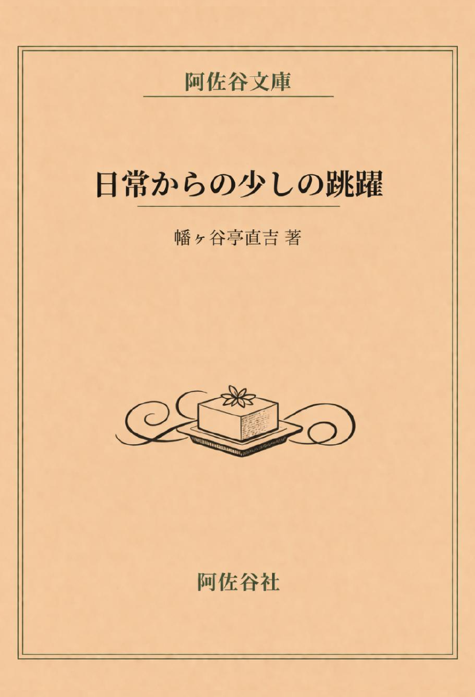

Doujinshi / Short Stories
現実からの少しの跳躍
2011年から2012年頃にブログへ綴っていた文章を抜粋・再編集した短篇集です。
書影

本について
紹介文
2011年から2012年頃にブログへ綴っていた文章を抜粋・再編集した短篇集です。
売れないミュージシャンだった頃の自分が見ていた、日常から少しだけ跳躍した風景を、一冊にまとめました。
猫の群れに怯まされ、見知らぬ長距離電話に勝手な使命感を抱き、壊れた携帯電話に情を移し、ハンバーグラーメンに翻弄され、豆腐に祈りを託す。
どの話もどこか可笑しく、けれど少しだけさびしさが残ります。大真面目なのに、少しおかしい。そんな語りの先にある、可笑しみと哀感を楽しんでいただけたら嬉しいです。